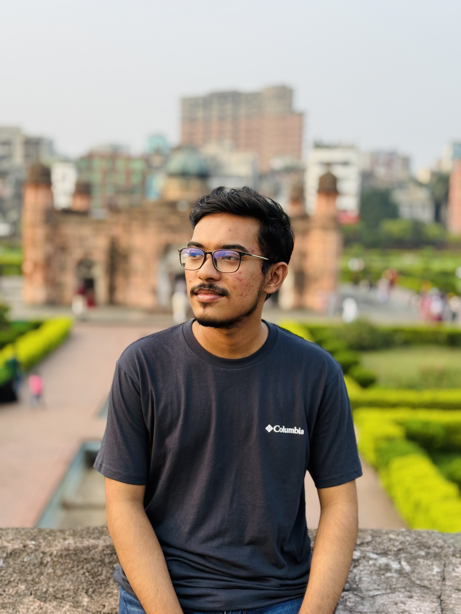

I'm Ayon Kumar Bhowmick Ovi, a Computer Science and Engineering student at American International University-Bangladesh.I'm skilled in C++, Java, C#, JavaScript, HTML, and CSS, with experience in MySQL, SQL Server, and Oracle SQL. I have a strong backgrourd in software development, web technologies, and database systems. I'm also passionate about learning new technologies and solving real-world problems. With solid teamwork, time management, and organizational skills, I aim to contribute to impactful and innovative software solutions.My academic projects and hands-on experiences have equipped me with a problem-solving mindset and a collaborative attitude. I'm always eager to grow as a developer and make a meaningful difference through technology.